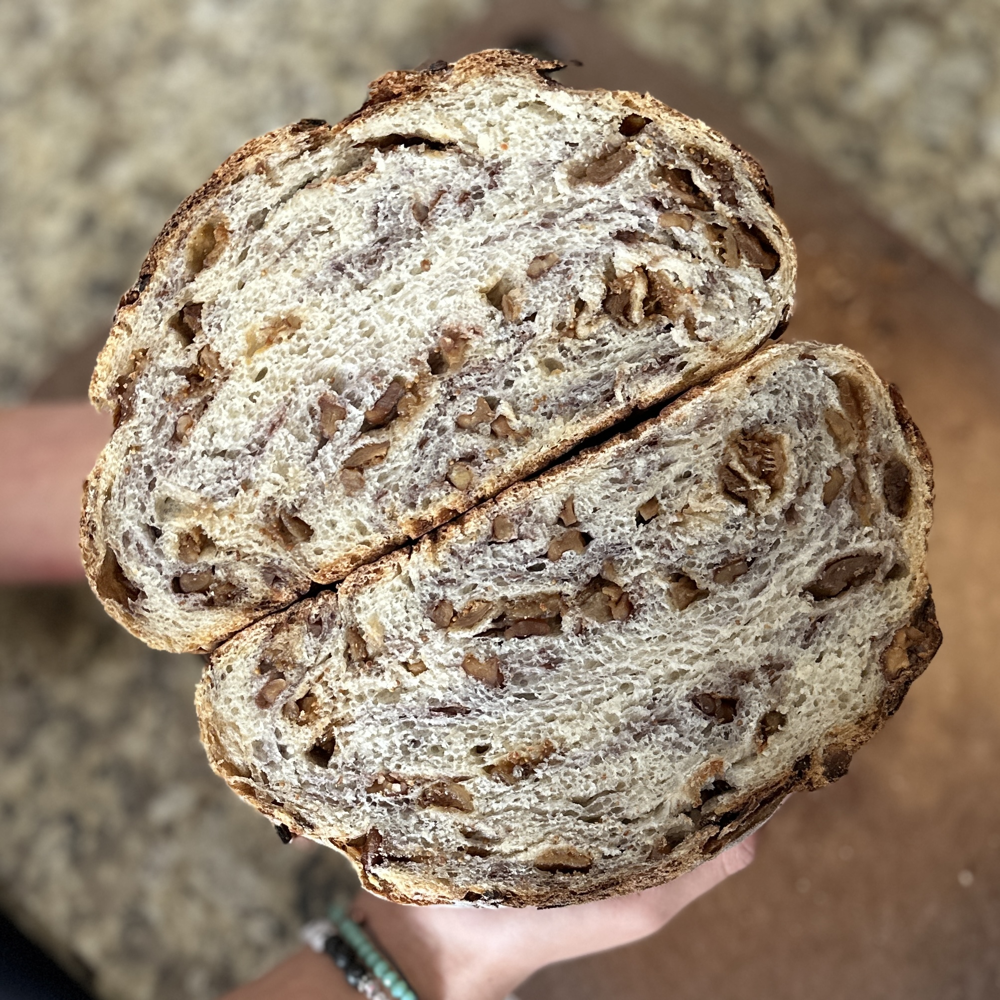
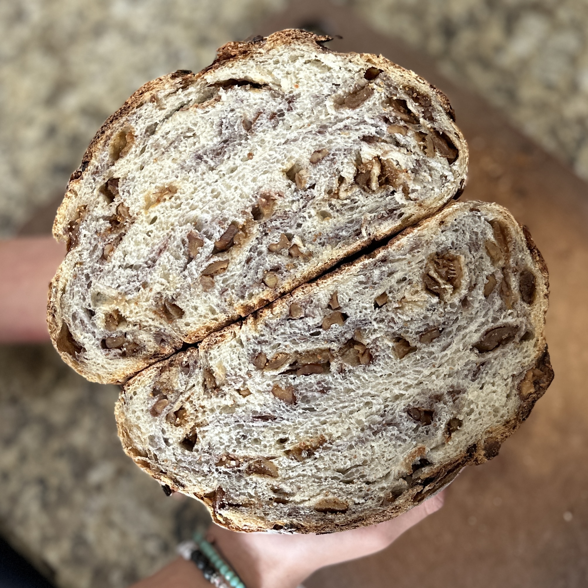

Bready, Set, Go!
Welcome to Alicia's Sourdough Guide! A cozy corner on the web dedicated to all things sourdough: from nurturing your first starter to mastering artisan loaves. Whether you’re a beginner or a seasoned baker, you’ll find everything you need to help your sourdough passion thrive.

About Me
Hi, I’m Alicia—a home baker who fell in love with sourdough during my search for a new hobby. What started as a way to pass the time quickly became a passion for nurturing my starter and experimenting with new recipes. If the thought of creating and maintaining a sourdough starter feels overwhelming, you’re not alone—I’ve been there too. But here’s the good news: sourdough doesn’t have to be complicated! Here, I’ll break it all down into easy, manageable steps to help you succeed at every stage, whether it’s your first starter or your 50th loaf. Together, we’ll make sourdough baking simple, rewarding, and, most importantly, fun!
 


Dough You Know Sourdough?
What even is sourdough? Sourdough is one of the oldest forms of bread, made using wild yeast and lactic bacteria instead of commercial yeast. This slow-fermentation process creates a unique, tangy flavor and a beautifully chewy texture that bakers and bread lovers adore. Unlike store-bought bread, sourdough uses just three simple ingredients: flour, water, and salt. Yet, the possibilities are endless—from classic loaves to pizza crusts, pancakes, and even desserts!
The Proof is in the Dough!
There are so many reasons why sourdough baking is so great! Here are a few:
- A Lifetime of Bread: With just flour, water, and patience, a single sourdough starter can provide you with years of delicious, hearty bread. It’s a living, breathing companion in your kitchen!
- Creative Freedom: Sourdough is more than just bread; it’s a canvas for creativity. Experiment with different flours, flavors, and techniques to make each loaf uniquely yours.
- Mindful Joy: There’s something incredibly satisfying about slowing down, working with your hands, and seeing the fruits of your labor in a golden, crusty loaf fresh out of the oven.
- Healthier Bread: Sourdough is easier to digest, packed with natural probiotics, and has a lower glycemic index compared to conventional bread. It also doesn't contain as much gluten and is less likely to spike your blood sugar levels. It’s a treat for your taste buds and your body.
Let's Get This Bread, Shall We?
Ready to start your sourdough adventure? Check out the Starter Guide for step-by-step instructions to create your very own sourdough starter, or explore delicious Recipes to bake today!